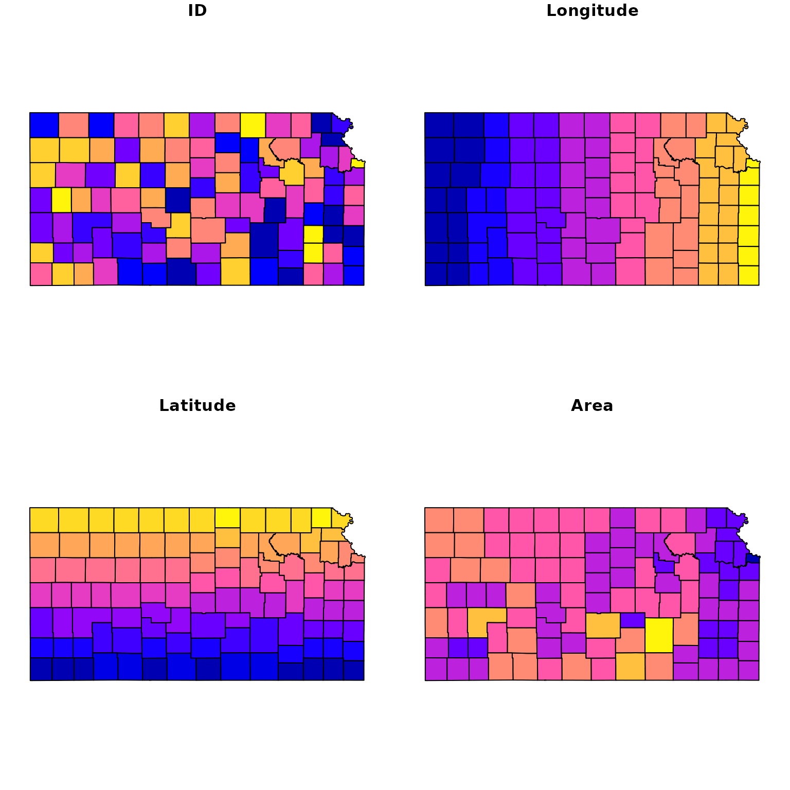
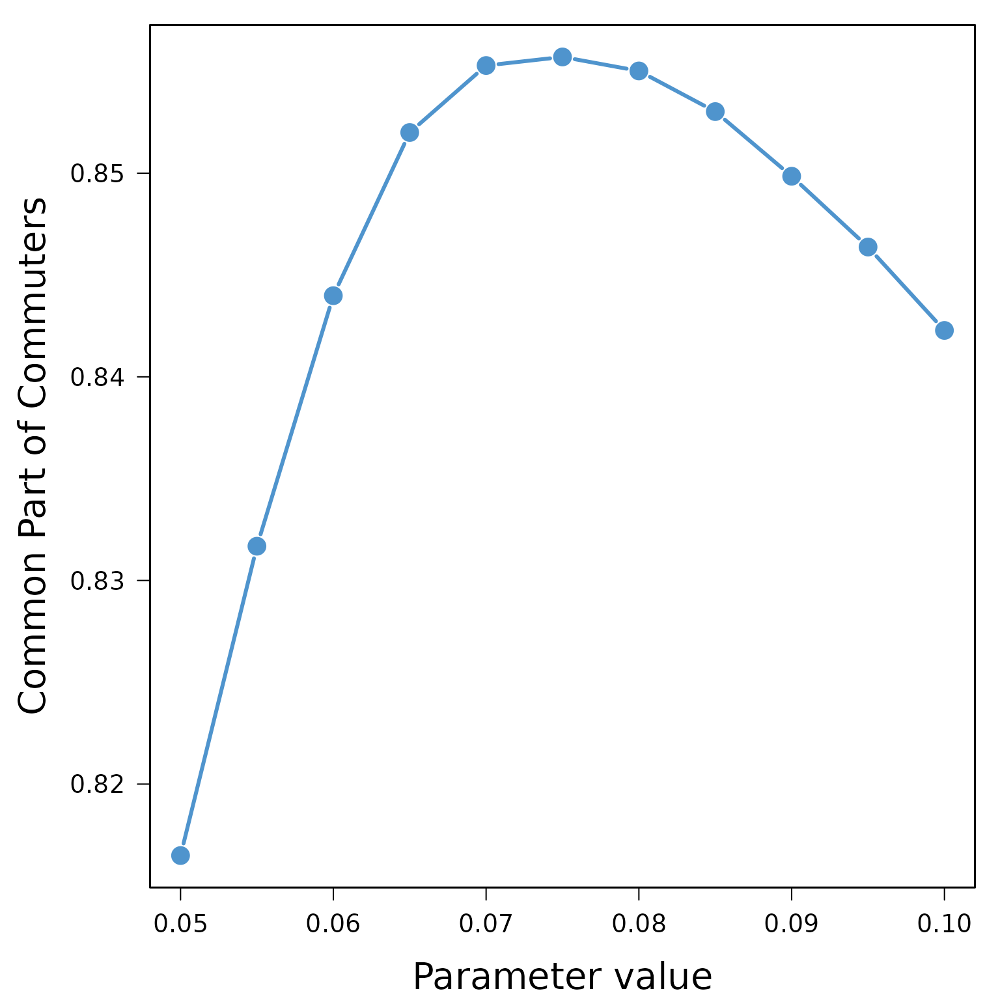

Introduction
This tutorial aims at describing the different features of the R
package TDLM. The main purpose of the TDLM’s
package is to propose a rigorous framework to fairly compare trip
distribution laws and models (Lenormand,
Bassolas, and Ramasco 2016). This general framework is based on a
two-step approach to generate mobility flows by separating the trip
distribution law, gravity or intervening opportunities, from the
modeling approach used to generate the flows from this law.
A short note on terminology
This framework is part of the four-step travel model. It corresponds to the second step, called trip distribution, the aim of which is to match the trip origins with the trip destinations. The model used to generate the trips or flows, and more generally the degree of interaction between different locations, are often called spatial interaction models. According to the research area, a matrix or a network formalism can be used to describe these spatial interactions. Origin-Destination matrix (or trip table) are often used in geography or transportation while in statistical physics or in the study of complex systems the term mobility networks is usually preferred.
Origin–Destination matrix
The description of movements in a certain area is represented by an Origin-Destination matrix (OD matrix). The area of interest is divided into \(n\) locations and \(T_{ij}\) represents the volume of flows between location \(i\) and location \(j\). This volume usually represents a number of trips or a commuting flow (i.e. number of individuals living in \(i\) and working in \(j\)). The OD matrix is squared, contains only positive values and can be a zero-diagonal matrix (Figure 1).

Aggregated inputs information
Three categories of inputs are usually considered to simulate an OD matrix (Figure 2). The masses and distances are the main ingredients used to generate a matrix of probabilities based on a given distribution law. Hence, the probability \(p_{ij}\) to observe a trip from location \(i\) to another location \(j\) is based on the masses, the demand at origin (\(m_i\)) and the offer at destination (\(m_j\)). Typically, the population is used as surrogate for the demand and offer. The probability of movements also depends on the costs based on the distance \(d_{ij}\) between locations or the number of opportunities \(s_{ij}\) between locations depending on the chosen law (more details in the next “Trip distribution laws” section). In general both the effect of the cost can be adjusted with a parameter.
The margins are used to generate an OD matrix based on the matrix of probabilities by preserving the total number of trips (\(N\)), the number of out-going trips (\(O_i\)) and/or the number of in-coming trips (\(D_j\)) (more details in the “Contrained distribution models” section).

Trip distribution laws
The purpose of a trip distribution law is to estimate the probability \(p_{ij}\) that out of all the possible travels in the system we have one between the location \(i\) and the location \(j\). This probability is asymmetric in \(i\) and \(j\) as the flows themselves. It takes the form of squared matrix of probabilities. This probability is normalized to all possible couples of origins and destinations, \(\sum_{i,j=1}^n p_{ij} =1\). Hence, a matrix of probabilities can be obtained by normalizing any OD matrix (Figure 3).

As mentioned in the previous section, most of the trip distribution law depends on the demand at origin (\(m_i\)), the offer at destination (\(m_j\)) and a cost to move from \(i\) to \(j\). There are two major approaches for the estimation of the matrix of probability. The traditional gravity approach, in analogy with the Newton’s law of gravitation, is based on the assumption that the amount of trips between two locations is related to their populations and decays with a function of the distance \(d_{ij}\) between locations. In contrast to the gravity law, the laws of intervening opportunities hinges on the assumption that the number of opportunities \(s_{ij}\) between locations plays a more important role than the distance (Lenormand, Bassolas, and Ramasco 2016). This fundamental difference between the two schools of thought is illustrated in Figure 4.

It is important to note that the effect of the cost between locations (distance or number of opportunities) can usually be adjusted with a parameter that can be calibrated automatically or by comparing the simulated matrix with observed data (more details in the example based on real commuting data in Kansas below).
Constrained distribution models
The purpose of the trip distribution models is to generate an OD matrix \(\tilde{T}=(\tilde{T}_{ij})\) by drawing at random \(N\) trips from the trip distribution law \((p_{ij})_{1 \leq i,j \leq n}\) respecting different level of constraints according to the model. We considered four different types of models in this package. As can be observed in Figure 5, the four models respect different level of constraints from the total number of trips to the total number of out-going and in-coming trips by locations (i.e. the margins).

More specifically, the volume of flows \(\tilde{T}_{ij}\) is generated from the matrix of probability with multinomial random draws that will take different forms according to the model used (Lenormand, Bassolas, and Ramasco 2016). Therefore, since the process is stochastic, each simulated matrix is unique and composed of integers. Note that it is also possible to generate an average matrix from the multinomial trials.
Goodness-of-fit measures
Finally, the trip distribution laws can be calibrated and both the trip distribution laws and models can be evaluated by comparing a simulated matrix \(\tilde{T}\) with the observed one \(T\). These comparison are based on different goodness-of-fit measures that can take into accounts the distance between location or not (more details in the example based on real commuting data in Kansas below).
Example of commuting in Kansas
Data
In this example, we will use commuting data from US Kansas in 2000 to illustrate the main package’s functions. The dataset is composed of three tables and a spatial object providing information of commuting flows between the 105 US Kansas counties in 200. The observed OD matrix od is a zero-diagonal squared matrix of integers. Each element of the matrix represents the number of commuters between a pair of US Kansas counties.
data(od)
od[1:10, 1:10]## 20001 20003 20005 20007 20009 20011 20013 20015 20017 20019
## 20001 0 71 0 0 0 73 0 8 0 0
## 20003 236 0 0 0 0 19 0 0 0 0
## 20005 0 0 0 0 0 0 195 0 0 0
## 20007 0 0 0 0 8 0 0 0 0 0
## 20009 0 0 0 11 0 0 0 1 0 0
## 20011 116 11 0 0 0 0 0 7 0 0
## 20013 14 0 162 0 0 0 0 0 0 0
## 20015 0 0 0 0 0 0 0 0 2 3
## 20017 0 0 0 0 5 0 0 28 0 0
## 20019 0 0 0 0 0 0 0 15 0 0
dim(od)## [1] 105 105The aggregated data are composed of the distance matrix,
data(distance)
distance[1:10, 1:10]## 20001 20003 20005 20007 20009 20011 20013
## 20001 0.00000 36.50943 182.92913 306.8503 308.8995 39.80310 216.86309
## 20003 36.50943 0.00000 146.43350 317.5593 303.2348 55.70229 180.68407
## 20005 182.92913 146.43350 0.00000 389.5330 319.5319 190.61409 39.16442
## 20007 306.85034 317.55926 389.53300 0.0000 139.0661 345.02113 396.08680
## 20009 308.89947 303.23478 319.53188 139.0661 0.0000 348.30350 313.18189
## 20011 39.80310 55.70229 190.61409 345.0211 348.3035 0.00000 227.63541
## 20013 216.86309 180.68407 39.16442 396.0868 313.1819 227.63541 0.00000
## 20015 135.45964 143.66094 235.33947 173.8984 184.6661 174.86577 252.67660
## 20017 122.13915 113.90701 175.91511 218.9859 189.3766 160.48402 191.29570
## 20019 116.64897 144.89730 276.87712 216.1297 265.3289 145.90037 303.26803
## 20015 20017 20019
## 20001 135.45964 122.13915 116.64897
## 20003 143.66094 113.90701 144.89730
## 20005 235.33947 175.91511 276.87712
## 20007 173.89836 218.98595 216.12968
## 20009 184.66612 189.37664 265.32892
## 20011 174.86577 160.48402 145.90037
## 20013 252.67660 191.29570 303.26803
## 20015 0.00000 61.72259 87.53437
## 20017 61.72259 0.00000 131.62896
## 20019 87.53437 131.62896 0.00000
dim(distance)## [1] 105 105and the masses and margins contained in the data.frame mass.
data(mass)
mass[1:10,]## Population Out-commuters In-commuters
## 20001 14385 1267 1343
## 20003 8110 1346 361
## 20005 16774 1065 1247
## 20007 5307 260 201
## 20009 28205 1129 1324
## 20011 15379 662 761
## 20013 10724 1148 984
## 20015 59482 14182 3579
## 20017 3030 681 93
## 20019 4359 486 180
dim(mass)## [1] 105 3
mi <- as.numeric(mass[,1])
names(mi) <- rownames(mass)
mj <- mi
Oi <- as.numeric(mass[,2])
names(Oi) <- rownames(mass)
Dj <- as.numeric(mass[,3])
names(Dj) <- rownames(mass)Finally, county is a spatial object containing the geometry of the 105 US Kansas counties in 2000.
## Simple feature collection with 10 features and 4 fields
## Geometry type: MULTIPOLYGON
## Dimension: XY
## Bounding box: xmin: -99.0334 ymin: 36.99796 xmax: -94.6139 ymax: 40.0006
## Geodetic CRS: WGS 84
## ID Longitude Latitude Area geometry
## 1016 20001 -95.30137 37.88581 1307.667 MULTIPOLYGON (((-95.08805 3...
## 983 20003 -95.29334 38.21429 1512.337 MULTIPOLYGON (((-95.07771 3...
## 869 20005 -95.31288 39.53194 1125.682 MULTIPOLYGON (((-95.56751 3...
## 1064 20007 -98.68482 37.22888 2941.524 MULTIPOLYGON (((-98.52686 3...
## 962 20009 -98.75650 38.47904 2330.541 MULTIPOLYGON (((-99.03239 3...
## 1017 20011 -94.84928 37.85522 1653.609 MULTIPOLYGON (((-94.61413 3...
## 843 20013 -95.56416 39.82657 1480.469 MULTIPOLYGON (((-95.77332 3...
## 1011 20015 -96.83911 37.78125 3744.168 MULTIPOLYGON (((-96.52571 3...
## 974 20017 -96.59395 38.30205 2013.697 MULTIPOLYGON (((-96.81972 3...
## 1079 20019 -96.24535 37.15007 1669.418 MULTIPOLYGON (((-96.52495 3...
plot(county)
The data must always be based on the same number of locations sorted in the same order. The function check_format_names can be used to control the validity of all the inputs before running the main package’s functions.
check_format_names(vectors = list(mi = mi, mj = mj, Oi = Oi, Dj = Dj),
matrices = list(od = od, distance = distance),
check = "format_and_names")## The inputs passed the format_and_names checks successfully!Extract additional spatial information
The functions extract_spatial_information and extract_opportunities can be used to extract the matrices of distances and number of intervening opportunities, respectively.
The first function takes as input a spatial object containing the
geometry of the locations that can be handled by the sf package. It returns
a matrix of great-circle distances between locations (express in km). An
optional id can also be provided to be used as names for
the outputs.
spi <- extract_spatial_information(county, id = "ID")
distance2 <- spi$distance
distance2[1:10, 1:10]## 20001 20003 20005 20007 20009 20011 20013
## 20001 0.00000 36.50943 182.92913 306.8503 308.8995 39.80310 216.86309
## 20003 36.50943 0.00000 146.43350 317.5593 303.2348 55.70229 180.68407
## 20005 182.92913 146.43350 0.00000 389.5330 319.5319 190.61409 39.16442
## 20007 306.85034 317.55926 389.53300 0.0000 139.0661 345.02113 396.08680
## 20009 308.89947 303.23478 319.53188 139.0661 0.0000 348.30350 313.18189
## 20011 39.80310 55.70229 190.61409 345.0211 348.3035 0.00000 227.63541
## 20013 216.86309 180.68407 39.16442 396.0868 313.1819 227.63541 0.00000
## 20015 135.45964 143.66094 235.33947 173.8984 184.6661 174.86577 252.67660
## 20017 122.13915 113.90701 175.91511 218.9859 189.3766 160.48402 191.29570
## 20019 116.64897 144.89730 276.87712 216.1297 265.3289 145.90037 303.26803
## 20015 20017 20019
## 20001 135.45964 122.13915 116.64897
## 20003 143.66094 113.90701 144.89730
## 20005 235.33947 175.91511 276.87712
## 20007 173.89836 218.98595 216.12968
## 20009 184.66612 189.37664 265.32892
## 20011 174.86577 160.48402 145.90037
## 20013 252.67660 191.29570 303.26803
## 20015 0.00000 61.72259 87.53437
## 20017 61.72259 0.00000 131.62896
## 20019 87.53437 131.62896 0.00000This function allows also to extract the number of the surface area of each location (in squared kilometer) that can be useful to calibrate the trip distribution laws parameter value (see below).
mean(spi$surface)## [1] 2028.05The second function computes the number of opportunities between pairs of locations. For a given pair of location the number of opportunities between the location of origin and the location of destination is based on the number of opportunities in a circle of radius equal to the distance between origin and destination centered in the origin. The number of opportunities at origin and destination are not included. In our case, the number of inhabitants (\(m_i\)) is used as proxy for the number of opportunity.
sij <- extract_opportunities(opportunity = mi,
distance = distance,
check_names = TRUE)
sij[1:10, 1:10]## 20001 20003 20005 20007 20009 20011 20013 20015 20017
## 20001 0 16997 1445725 2358187 2363494 28895 2112382 1037999 865098
## 20003 0 0 1374401 2403828 2354815 89743 1577419 1310560 1219766
## 20005 1311224 1240896 0 2454129 2346302 1329397 26675 1507244 1308194
## 20007 1433163 1481954 2489482 0 634786 1761752 2506256 784401 1033184
## 20009 1778443 1651945 1820549 344665 0 2426105 1792828 1006105 1070707
## 20011 47812 79194 1390766 2357193 2362500 0 1520832 1288889 1278974
## 20013 1410286 1302399 18966 2475846 2326406 1436135 0 1501910 1330347
## 20015 874190 957116 2331868 1272683 1471752 1277990 2390227 0 529702
## 20017 1108686 1021292 2081327 2408908 2312482 1491593 2340687 63073 0
## 20019 222857 795722 2320023 1387590 2282995 839767 2400214 116644 759823
## 20019
## 20001 409653
## 20003 1370042
## 20005 1734928
## 20007 1025564
## 20009 1355225
## 20011 1017627
## 20013 2285756
## 20015 575300
## 20017 1238018
## 20019 0Run functions
The main function of the package is run_law_model. The function has two sets of arguments, one for the law and another one for the model. The inputs (described above) necessary to run this function depends on the law (either the matrix of distances or number of opportunities can be used, or neither of them for the uniform law) and on the model and its associated constraints (number of trips, out-going trips and/or in-coming trips). The example below will generate three simulated ODs with the normalized gravity law with an exponential distance decay function (Lenormand, Bassolas, and Ramasco 2016) and the Doubly Constrained Model.
res <- run_law_model(law = "NGravExp",
mass_origin = mi,
mass_destination = mj,
distance = distance,
opportunity = NULL,
param = 0.01,
write_proba = TRUE,
model = "DCM",
nb_trips = NULL,
out_trips = Oi,
in_trips = Dj,
average = FALSE,
nbrep = 3)The output is an object of class TDLM. In this case it
is a list of matrices composed of the three simulated matrices
(replication_1, replication_2 and
replication_3), the matrix of probabilities (called
proba) associated with the law and returned only if
write_proba = TRUE. The objects of class TDLM
contain a table info summarizing the simulation run.
print(res)## Argument Value
## 1 Law NGravExp
## 2 Model DCM
## 3 #Replications 3
## 4 #Parameters 1
## 5 Parameter 0.01
str(res)## List of 5
## $ info :'data.frame': 5 obs. of 2 variables:
## ..$ Argument: chr [1:5] "Law" "Model" "#Replications" "#Parameters" ...
## ..$ Value : chr [1:5] "NGravExp" "DCM" "3" "1" ...
## $ replication_1: num [1:105, 1:105] 0 23 4 0 2 15 4 103 6 6 ...
## ..- attr(*, "dimnames")=List of 2
## $ replication_2: num [1:105, 1:105] 0 25 4 0 2 16 5 105 7 6 ...
## ..- attr(*, "dimnames")=List of 2
## $ replication_3: num [1:105, 1:105] 0 23 4 0 2 15 4 103 5 6 ...
## ..- attr(*, "dimnames")=List of 2
## $ proba : num [1:105, 1:105] 0.00 4.31e-05 2.16e-05 3.90e-06 1.81e-05 ...
## ..- attr(*, "dimnames")=List of 2
## - attr(*, "class")= chr [1:2] "TDLM" "list"
## - attr(*, "from")= chr "run_law_model"
## - attr(*, "proba")= logi TRUEThis simulation run was based on one parameter value. It is possible
to use a vector instead of a scalar for the param
argument.
res <- run_law_model(law = "NGravExp",
mass_origin = mi,
mass_destination = mj,
distance = distance,
opportunity = NULL,
param = c(0.01,0.02),
write_proba = TRUE,
model = "DCM",
nb_trips = NULL,
out_trips = Oi,
in_trips = Dj,
average = FALSE,
nbrep = 3)In this case a list of list of matrices will be returned (one for each parameter value).
print(res)## Argument Value
## 1 Law NGravExp
## 2 Model DCM
## 3 #Replications 3
## 4 #Parameters 2
## 5 Parameter 1 0.01
## 6 Parameter 2 0.02
str(res)## List of 3
## $ info :'data.frame': 6 obs. of 2 variables:
## ..$ Argument: chr [1:6] "Law" "Model" "#Replications" "#Parameters" ...
## ..$ Value : chr [1:6] "NGravExp" "DCM" "3" "2" ...
## $ parameter_1:List of 4
## ..$ replication_1: num [1:105, 1:105] 0 23 4 0 2 15 4 105 5 6 ...
## .. ..- attr(*, "dimnames")=List of 2
## ..$ replication_2: num [1:105, 1:105] 0 23 4 0 2 15 4 103 5 6 ...
## .. ..- attr(*, "dimnames")=List of 2
## ..$ replication_3: num [1:105, 1:105] 0 23 4 0 2 17 5 103 5 6 ...
## .. ..- attr(*, "dimnames")=List of 2
## ..$ proba : num [1:105, 1:105] 0.00 4.31e-05 2.16e-05 3.90e-06 1.81e-05 ...
## .. ..- attr(*, "dimnames")=List of 2
## $ parameter_2:List of 4
## ..$ replication_1: num [1:105, 1:105] 0 53 2 0 0 38 1 76 5 7 ...
## .. ..- attr(*, "dimnames")=List of 2
## ..$ replication_2: num [1:105, 1:105] 0 56 2 0 0 38 1 77 5 7 ...
## .. ..- attr(*, "dimnames")=List of 2
## ..$ replication_3: num [1:105, 1:105] 0 53 2 0 0 39 1 77 5 7 ...
## .. ..- attr(*, "dimnames")=List of 2
## ..$ proba : num [1:105, 1:105] 0.00 8.13e-05 8.17e-06 7.10e-07 3.16e-06 ...
## .. ..- attr(*, "dimnames")=List of 2
## - attr(*, "class")= chr [1:2] "TDLM" "list"
## - attr(*, "from")= chr "run_law_model"
## - attr(*, "proba")= logi TRUEIt is also important to note that the radiation law and the uniform law are free of parameter.
res <- run_law_model(law = "Rad",
mass_origin = mi,
mass_destination = mj,
distance = NULL,
opportunity = sij,
param = NULL,
write_proba = TRUE,
model = "DCM",
nb_trips = NULL,
out_trips = Oi,
in_trips = Dj,
average = FALSE,
nbrep = 3)
print(res)## Argument Value
## 1 Law Rad
## 2 Model DCM
## 3 #Replications 3The argument average can be used to generate an average
matrix based on a multinomial distribution (based on an infinite number
of drawings). In this case, the models’ inputs can be either positive
integer or real numbers and the output (nbrep = 1 in this
case) will be a matrix of positive real numbers.
res$replication_1[1:10,1:10]## [,1] [,2] [,3] [,4] [,5] [,6] [,7] [,8] [,9] [,10]
## [1,] 0 32 0 0 0 120 0 1 0 0
## [2,] 570 0 0 0 0 24 0 0 0 0
## [3,] 0 0 0 0 0 0 198 0 0 0
## [4,] 0 0 0 0 0 0 0 0 0 0
## [5,] 0 0 0 1 0 0 0 3 0 0
## [6,] 17 2 0 0 0 0 0 0 0 0
## [7,] 0 0 202 0 0 0 0 0 0 0
## [8,] 4 1 1 1 10 5 1 0 0 1
## [9,] 0 0 0 0 0 0 0 40 0 0
## [10,] 0 0 0 0 0 0 0 13 0 0
res <- run_law_model(law = "Rad",
mass_origin = mi,
mass_destination = mj,
distance = NULL,
opportunity = sij,
param = NULL,
write_proba = TRUE,
model = "DCM",
nb_trips = NULL,
out_trips = Oi,
in_trips = Dj,
average = TRUE,
nbrep = 3)
print(res)## Argument Value
## 1 Law Rad
## 2 Model DCM
## 3 #Replications 1 (average)
res$replication_1[1:10,1:10]## [,1] [,2] [,3] [,4] [,5]
## [1,] 4.207454e-04 3.248924e+01 1.629984e-01 0.0169209490 1.523725e-01
## [2,] 5.645506e+02 6.155812e-04 1.486180e-01 0.0133929974 1.262074e-01
## [3,] 8.174148e-02 2.927128e-02 8.564946e-04 0.0180562693 1.785403e-01
## [4,] 5.866220e-03 1.762770e-03 5.461852e-03 0.0006206272 1.984250e-01
## [5,] 7.824940e-02 2.902253e-02 2.083665e-01 1.3841229993 7.860351e-04
## [6,] 1.794519e+01 2.896778e+00 1.227317e-01 0.0118216041 1.064531e-01
## [7,] 4.854529e-02 1.825077e-02 2.003666e+02 0.0121155517 1.240133e-01
## [8,] 4.235287e+00 1.150834e+00 1.817298e+00 1.5952317911 1.087001e+01
## [9,] 1.701860e-02 6.442397e-03 1.358021e-02 0.0027705322 2.718136e-02
## [10,] 3.657437e-01 9.929259e-03 1.029943e-02 0.0078265447 2.624542e-02
## [,6] [,7] [,8] [,9] [,10]
## [1,] 1.206594e+02 8.830093e-02 1.637304888 0.0120698542 0.0777923728
## [2,] 2.261365e+01 1.297312e-01 0.862290746 0.0050699294 0.0060667099
## [3,] 1.934135e-01 1.973623e+02 0.918724724 0.0061614808 0.0053164987
## [4,] 9.469349e-03 6.169547e-03 0.278155220 0.0008433002 0.0012892865
## [5,] 1.033249e-01 2.460352e-01 3.462295645 0.0158169340 0.0150487684
## [6,] 5.850044e-04 1.180099e-01 0.752499705 0.0038974570 0.0092130934
## [7,] 1.138611e-01 2.549294e-03 0.633540548 0.0040869895 0.0021031775
## [8,] 5.040588e+00 1.982879e+00 0.002650424 0.7993806174 1.0370497229
## [9,] 2.296625e-02 1.230871e-02 39.049317001 0.0005691793 0.0015470504
## [10,] 6.732294e-02 1.102089e-02 13.987963900 0.0025478503 0.0002716179The functions run_law and run_model have been designed to run only one of the two components of the two-step approach. They function the same as a run_law_model, but it is worth noting that only inter-location flows are considered for the distribution laws, meaning that the matrix of probabilities (and associated simulated OD matrices) generated by a given distribution law with run_law_model or run_law is a zero-diagonal matrix. Nevertheless, it is possible to generate intra-location flows with run_model taking any kind of matrix of probabilities as input.
Parameters’ calibration & models’ evaluation
The package contains two function to help calibrating and evaluating the model. The function gof computes goodness-of-fit measures between observed and simulated OD matrices and the function calib_param that estimates the optimal parameter value for a given law and a given spatial distribution of location based on the Figure 8 in (Lenormand, Bassolas, and Ramasco 2016).
Let us illustrate the trip distribution laws and models’ calibration with the the normalized gravity law with an exponential distance decay function and the Doubly Constrained Model. Based on the average surface area of the Kansas counties (in square kilometers) it seems that the optimal parameter value of the normalized gravity law with an exponential distance decay function (as described in (Lenormand, Bassolas, and Ramasco 2016)) for commuting in US Kansas counties is around 0.085.
print(calib_param(av_surf = mean(spi$surface), law = "NGravExp"))## [1] 0.08521097This is just an estimation that help us to identify the potential range of parameter value, so in order to rigorously calibrate and evaluate the trip distribution law and model we need to compute the goodness-of-fit measure for a wide range of parameter values.
res <- run_law_model(law = "NGravExp",
mass_origin = mi,
mass_destination = mj,
distance = distance,
opportunity = NULL,
param = seq(0.05,0.1,0.005),
write_proba = TRUE,
model = "DCM",
nb_trips = NULL,
out_trips = Oi,
in_trips = Dj,
average = FALSE,
nbrep = 3)
calib <- gof(sim = res, obs = od, measures = "all", distance = distance)
print(calib)## Parameter Parameter_value Simulation CPC NRMSE KL
## 1 parameter_1 0.05 replication_1 0.8164535 10.513961 0.12933490
## 2 parameter_1 0.05 replication_2 0.8163736 10.524516 0.12941875
## 3 parameter_1 0.05 replication_3 0.8163436 10.520915 0.12952054
## 4 parameter_2 0.055 replication_1 0.8316920 9.417863 0.11325043
## 5 parameter_2 0.055 replication_2 0.8314774 9.426661 0.11345362
## 6 parameter_2 0.055 replication_3 0.8316371 9.420577 0.11327672
## 7 parameter_3 0.06 replication_1 0.8440506 8.646542 0.09825719
## 8 parameter_3 0.06 replication_2 0.8439408 8.646137 0.09822824
## 9 parameter_3 0.06 replication_3 0.8440855 8.642724 0.09822923
## 10 parameter_4 0.065 replication_1 0.8520617 8.166409 0.08794545
## 11 parameter_4 0.065 replication_2 0.8519718 8.171713 0.08807803
## 12 parameter_4 0.065 replication_3 0.8518970 8.175381 0.08782277
## 13 parameter_5 0.07 replication_1 0.8553709 7.957752 0.07997849
## 14 parameter_5 0.07 replication_2 0.8553011 7.961606 0.08038099
## 15 parameter_5 0.07 replication_3 0.8552212 7.958406 0.08017661
## 16 parameter_6 0.075 replication_1 0.8556155 7.959707 0.07933579
## 17 parameter_6 0.075 replication_2 0.8557004 7.958248 0.07908605
## 18 parameter_6 0.075 replication_3 0.8558351 7.945436 0.07917017
## 19 parameter_7 0.08 replication_1 0.8551912 8.101786 0.07424888
## 20 parameter_7 0.08 replication_2 0.8549866 8.116146 0.07426440
## 21 parameter_7 0.08 replication_3 0.8550515 8.113038 0.07420861
## 22 parameter_8 0.085 replication_1 0.8531897 8.373917 0.07381964
## 23 parameter_8 0.085 replication_2 0.8530999 8.379994 0.07373777
## 24 parameter_8 0.085 replication_3 0.8530649 8.374893 0.07366679
## 25 parameter_9 0.09 replication_1 0.8499304 8.710749 0.07466713
## 26 parameter_9 0.09 replication_2 0.8499154 8.701567 0.07521379
## 27 parameter_9 0.09 replication_3 0.8500102 8.698367 0.07507077
## 28 parameter_10 0.095 replication_1 0.8463516 9.097593 0.08097439
## 29 parameter_10 0.095 replication_2 0.8463965 9.093998 0.08100610
## 30 parameter_10 0.095 replication_3 0.8463416 9.093782 0.08106385
## 31 parameter_11 0.1 replication_1 0.8424384 9.478782 0.08344893
## 32 parameter_11 0.1 replication_2 0.8423435 9.491386 0.08303843
## 33 parameter_11 0.1 replication_3 0.8423036 9.485250 0.08347356
## CPL CPC_d KS_stat KS_pval
## 1 0.6594274 0.8952967 0.07315135 0.9998501
## 2 0.6592593 0.8953316 0.07307648 0.9998532
## 3 0.6594221 0.8952817 0.07312639 0.9998508
## 4 0.6709979 0.9155016 0.05004643 1.0000000
## 5 0.6713432 0.9154567 0.05003146 1.0000000
## 6 0.6706494 0.9156863 0.04985177 1.0000000
## 7 0.6731549 0.9318732 0.03026575 1.0000000
## 8 0.6724324 0.9316735 0.03021584 1.0000000
## 9 0.6726142 0.9318283 0.03028073 1.0000000
## 10 0.6726761 0.9431636 0.03381959 1.0000000
## 11 0.6734234 0.9430688 0.03374971 1.0000000
## 12 0.6724866 0.9428392 0.03377467 1.0000000
## 13 0.6740654 0.9495475 0.03742833 1.0000000
## 14 0.6750365 0.9495925 0.03743831 1.0000000
## 15 0.6736719 0.9494128 0.03746826 1.0000000
## 16 0.6724917 0.9481899 0.04352774 1.0000000
## 17 0.6718891 0.9479553 0.04358265 1.0000000
## 18 0.6718891 0.9480801 0.04356768 1.0000000
## 19 0.6629492 0.9408726 0.04950238 1.0000000
## 20 0.6629492 0.9408327 0.04953233 1.0000000
## 21 0.6631546 0.9408077 0.04951735 1.0000000
## 22 0.6518141 0.9330112 0.05648526 1.0000000
## 23 0.6509704 0.9328815 0.05656013 1.0000000
## 24 0.6516067 0.9328864 0.05646031 1.0000000
## 25 0.6413008 0.9257738 0.06233012 0.9999993
## 26 0.6404421 0.9257388 0.06237005 0.9999993
## 27 0.6406758 0.9258187 0.06237504 0.9999993
## 28 0.6350679 0.9186561 0.06728652 0.9999941
## 29 0.6357616 0.9187310 0.06723162 0.9999942
## 30 0.6353097 0.9186511 0.06728652 0.9999941
## 31 0.6235613 0.9121574 0.07270712 0.9999610
## 32 0.6235613 0.9120077 0.07281693 0.9999597
## 33 0.6237724 0.9120226 0.07282192 0.9999595All the necessary information is stored in the object calib, most of the goodness-of-fit measures agree on a parameter value of 0.075 in that case with an associated average Common Part of Commuter equal to 85.6%.
cpc <- aggregate(calib$CPC, list(calib$Parameter_value), mean)[,2]
oldmar <- par()$mar
par(mar = c(4.5, 6, 1, 1))
plot(seq(0.05,0.1,0.005), cpc, type="b", pch=16, cex=2, lty=1, lwd=3,
col="steelblue3", axes=FALSE, xlab="", ylab="")
axis(1, cex.axis=1.2)
axis(2, cex.axis=1.2, las=1)
mtext("Parameter value", 1, line = 3.25, cex = 1.75)
mtext("Common Part of Commuters", 2, line = 4, cex = 1.75)
box(lwd=1.5)
par(mar = oldmar)